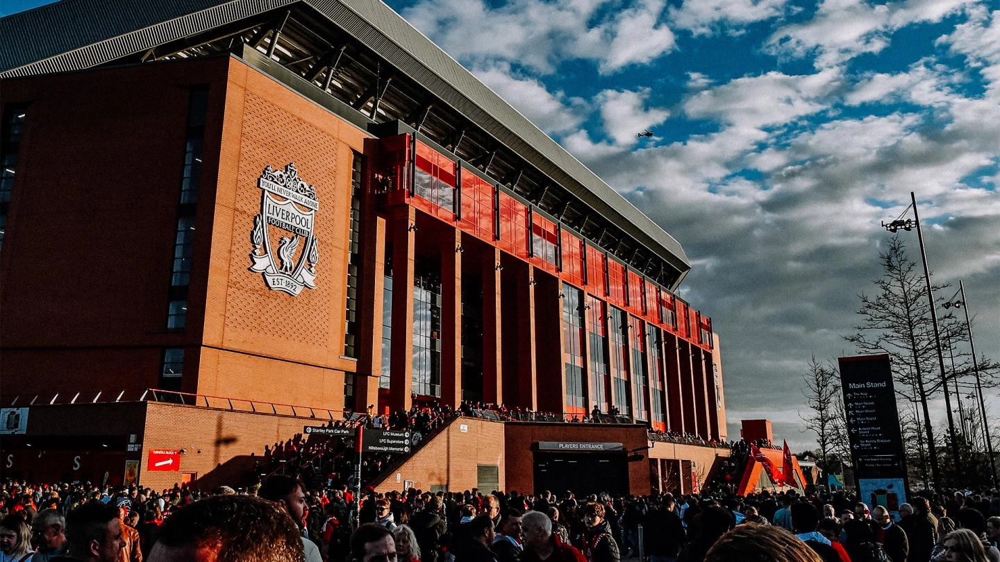
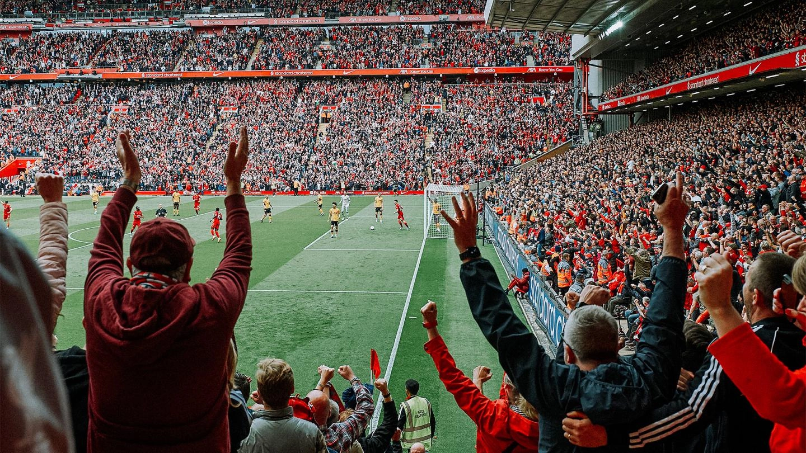

Anfield is a football stadium in the area of Anfield, Liverpool, England, which has been the home of Liverpool since their formation in 1892.
The stadium has a seating capacity of 61,276, making it the fifth largest stadium in England. It was originally the home of Everton from 1884 to 1891, before they moved to Goodison Park after a dispute with the club president.
The stadium has four stands: the Spion Kop, the Main Stand, the Sir Kenny Dalglish Stand and the Anfield Road End. The record attendance of 61,905 was set at a match between Liverpool and Wolverhampton Wanderers in 1952. The ground converted to an all-seater stadium in 1994 as a result of the Taylor Report, which reduced its capacity.
Two gates at the stadium are named after former Liverpool managers: Bill Shankly and Bob Paisley.
Both managers have been honoured with statues outside the stadium: Shankly's unveiled in 1997 by the Kop Stand and Paisley's in 2020 by the Main Stand.
The ground is 2 miles (3 km) from Liverpool Lime Street railway station.
It was proposed in 2002 for the club to relocate to a new stadium in the adjacent Stanley Park, but after the acquisition of Liverpool by Fenway Sports Group in 2010, it was made clear this would not happen, with the decision being taken to expand Anfield instead. Construction for an extension to the main stand began on 8 December 2014.
This extension, one of the largest all-seater single stands in European football, opened to the public on 9 September 2016, increasing the stadium capacity to 54,074. The Anfield Road Stand redevelopment completed in 2024 increased the stadium capacity to over 61,000.